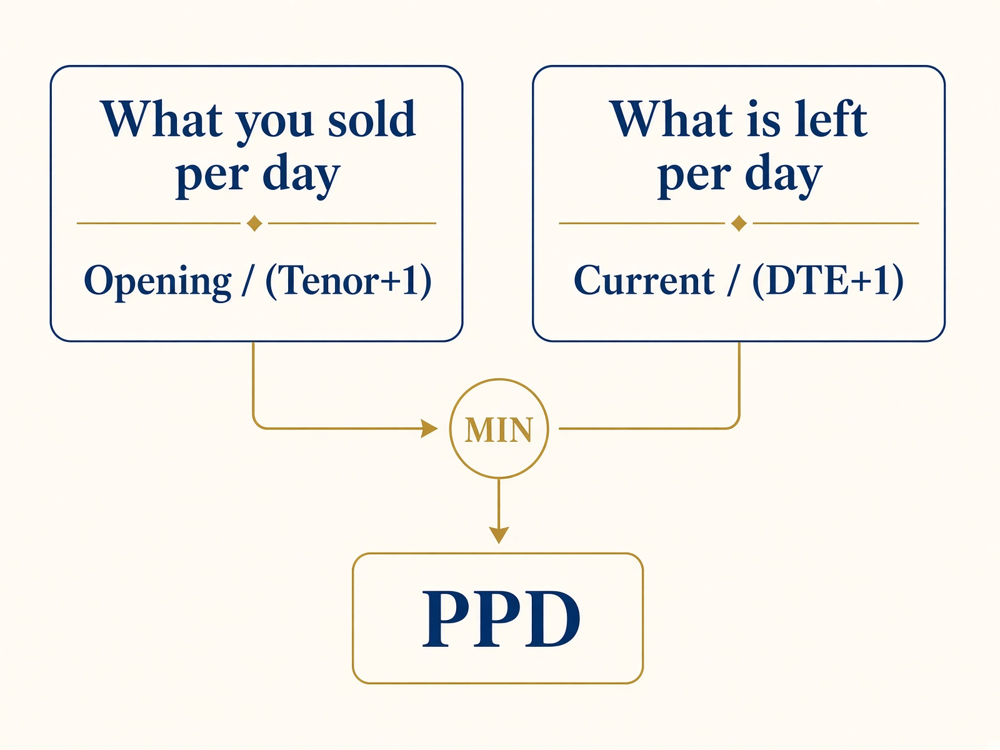
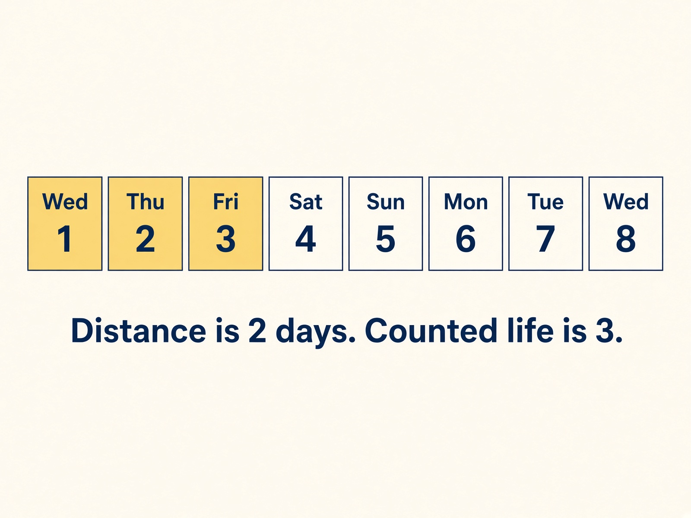
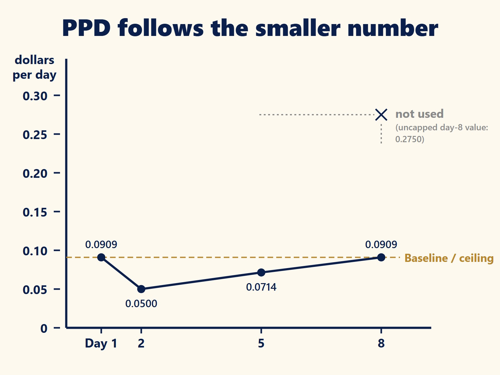
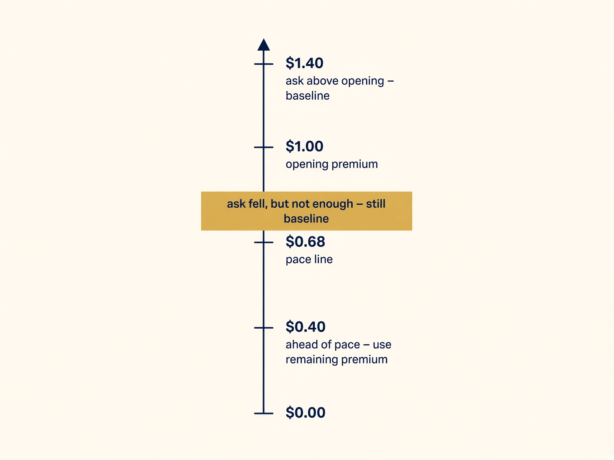
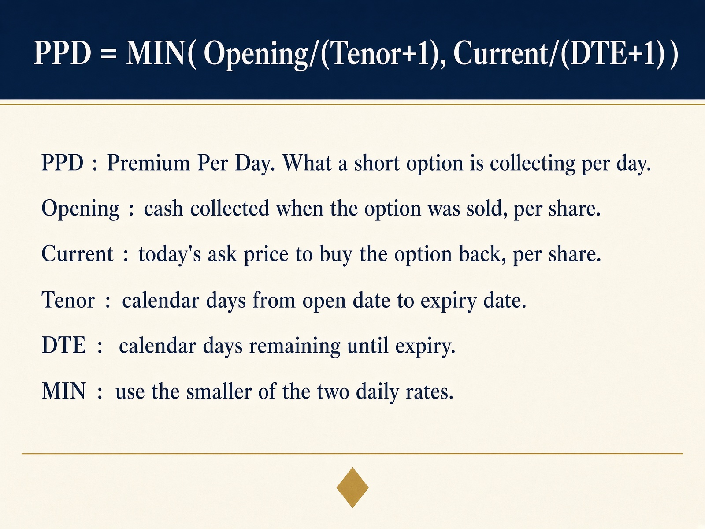

Start with Part One if you have not read it.
What This Piece Is
Part One explained the idea. This piece locks the definition so two people computing PPD get the same number. No trade advice. No sizing. No entry or exit rules. Just the metric.
The Rule
PPD is the smaller of two rates: what you collected per day of the trade's life, and what is left per day that remains.
PPD = MIN( Opening/(Tenor+1), Current/(DTE+1) )
Call the first term the baseline. PPD can fall below it. It cannot rise above it.

Figure 1. PPD takes the smaller of the two daily rates.
The Four Inputs
- Opening is the cash you collected when you sold, per share. It does not change.
- Current is today's ask, per share — the price you would actually pay to buy it back.
- Tenor is calendar days from open date to expiry date. It does not change.
- DTE is calendar days left to expiry. It counts down.
Opening and Tenor are fixed. Current and DTE move.
Why the +1
We count the days the position is alive, including today. On expiry day DTE is 0, but you still hold it, so we divide by 1. A 30-day put therefore has 31 counted days. Both sides of the MIN use the same count, so the comparison stays fair. Versus Part One's plain-day math, a 30-day trade only moves in the third decimal. Short trades move more.

Figure 2. Distance is 2 days. Counted life is 3.
How the Number Moves
A falling PPD means decay is running ahead of the original schedule. The number is not a straight slide down. Premium can bounce, so PPD can bounce — up to the baseline, never past it.
Separate 10-day example. You collected $1.00. Baseline = $1.00 / 11 = $0.0909 a day.
| Day | DTE | Ask | Ask / (DTE+1) | PPD | Read |
|---|---|---|---|---|---|
| 1 | 10 | $1.00 | $0.0909 | $0.0909 | Just opened — at baseline |
| 2 | 9 | $0.50 | $0.0500 | $0.0500 | Ask halved — PPD drops |
| 5 | 6 | $0.50 | $0.0714 | $0.0714 | Same ask, fewer days — PPD rises |
| 8 | 3 | $1.10 | $0.2750 | $0.0909 | Ask above opening — capped at baseline |
Day 8 is the easy misread. The position got worse — the ask is above what you collected. PPD does not print $0.2750. It prints the baseline. PPD is a collection pace, not a P&L.

Figure 3. The ceiling holds. The uncapped day-8 value is not used.
Two Useful Lines
The pace line is the remaining premium that would keep you exactly on schedule: Opening × (DTE+1) / (Tenor+1). On day 10 of the $1.00 / 30-day put (DTE 20), that line is $0.68.
If the ask is below the pace line, PPD uses Current / (DTE+1). Otherwise PPD stays at baseline. Part One's "winning" case was any ask below the opening price. The exact rule is tighter: the ask must also be below the pace line. Between opening and the pace line, PPD does not drop.

Figure 4. Below the pace line, use remaining premium. Otherwise stay at baseline.
What 0.00 Means
Zero can mean two different things. If the position is not short, or it has already expired (DTE below 0), treat 0.00 as not applicable and leave it out of averages. If the ask itself is $0.00, that zero is real — nothing left to collect — and it stays in the column.
A Few Edges
Expiry day uses DTE = 0, so PPD is the smaller of the ask and the baseline. Weekends count; DTE follows the calendar the way brokers quote it. A wide ask near expiry can leave a leftover floor — that is the cost of using the real buyback price. A roll is a new trade with its own Opening and Tenor. Units are per share, rounded to four decimals. This spec is for single-leg short puts and calls that are already open. Spreads and unsold candidates are not covered here.
Same Examples as Part One
| Example | Part One | This spec |
|---|---|---|
| Day 1, ask $1.00 | $0.0333 | $0.0323 |
| Day 10 (DTE 20), ask $0.40 | $0.0200 | $0.0190 |
| Day 10 (DTE 20), ask $1.40 | $0.0333 | $0.0323 |
The small shift is counted days. Part One did not show the in-between case: day 10, ask $0.99. That ask is below $1.00 but still above the $0.68 pace line, so this spec stays at $0.0323.
Keep This Card

Figure 5. The one-page definition.
What's Really at Stake When You Sell an Option is the other half of the picture. PPD measures what you collect and leaves capital out on purpose. Capital at stake measures what you actually have on the line at today's stock price, and why the strike price overstates it in a winning put and understates it in an in-the-money call.
Watch and Listen
- Part One video — Is Theta Lying to You?
- Part One companion video — Why Theta Lies About Your Option Income
This article is educational. It describes a position-level indicator the author uses in personal trading. It does not constitute a recommendation to buy or sell any security, nor a claim that any particular result is repeatable. Short options can produce losses larger than the premium received. Traders should understand the product and the margin requirements at their broker before use.